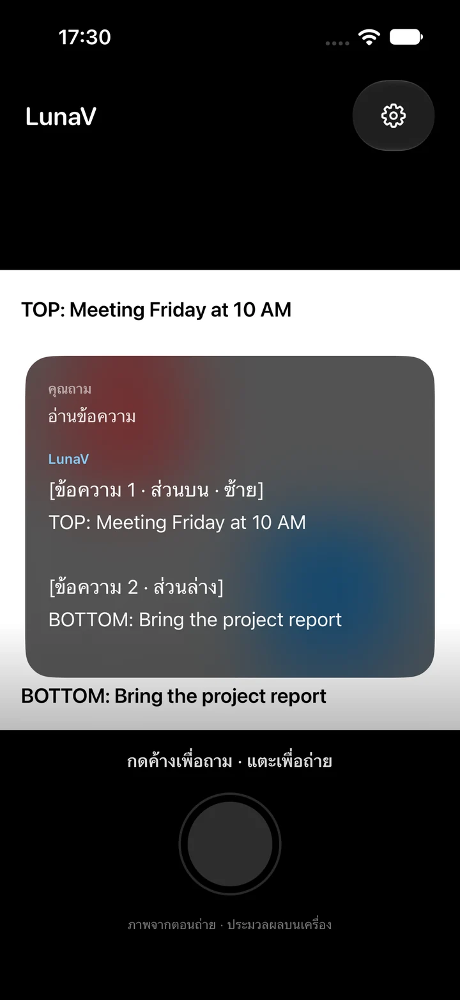

ภาพหนึ่งใบ บทสนทนาหนึ่งเรื่อง
กดค้าง ถาม แล้วเข้าใจได้มากขึ้น
กดชัตเตอร์ค้างเพื่อถ่ายภาพใหม่ แล้วพูดคำถามเป็นภาษาไทยหรืออังกฤษ ดูข้อความที่ถอดเสียงและคำตอบของ LunaV ได้บนหน้าจอเดียวกัน
- ถามเกี่ยวกับสิ่งของ สี และรายละเอียดที่มองเห็น
- ถามต่อจากภาพเดิมได้ผ่านเครื่องมือทดสอบ
- คำตอบเริ่มต้นเป็นภาษาไทย ขอให้ตอบภาษาอังกฤษได้
